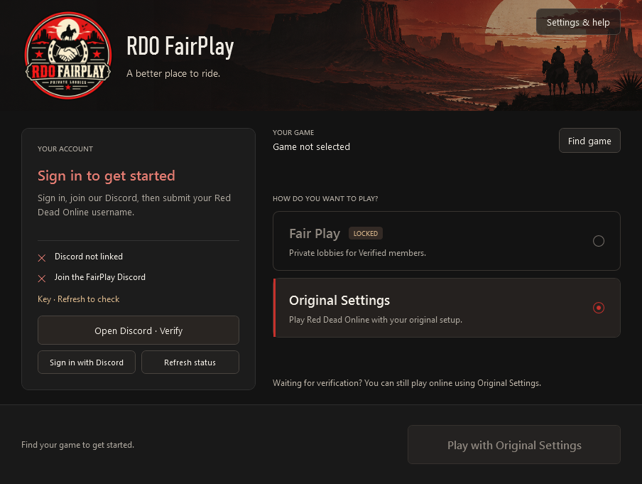

RED DEAD ONLINE · PC
A BETTER
PLACE TO RIDE.
The frontier is better with good company.
Find yours in FairPlay’s shared private lobbies.
Windows 10 / 11 · 64-bit · Red Dead Online required
Support-reviewed access
One simple launcher
Your original settings, preserved
THE FAIRPLAY WAY
LESS FRICTION.
MORE FRONTIER.
Hunt. Trade. Explore.
Or just take the long way home.
FairPlay gives you a shared place to play, with access reviewed by real support staff. Join through Discord, get your Red Dead name approved, and head out together.
No lobby keys to copy. No complicated setup every time you play. The launcher handles your FairPlay configuration.
Meet the communityBUILT TO GET YOU PLAYING
YOUR NEXT RIDE.
A FEW CLICKS AWAY.
See your account status at a glance. Choose Fair Play when you’re verified, or use Original Settings to play normally.
- Sign in with Discord
- Know when your verification is ready
- Keep a path back to your original setup

FROM DISCORD TO THE SADDLE
THREE STEPS.
THEN YOU’RE OFF.
Your account starts in Discord.
Your next session starts in FairPlay.
- 01
Join the Discord
Head to the verification channel and press Verify My Account. Enter your Red Dead Online username exactly as it appears in game.
Join RDO FairPlay - 02
Get approved
Support reviews your request and grants the Verified role. Need a hand? Use Get help to open a private support ticket.
- 03
Download. Sign in. Ride.
Install the Windows launcher and sign in with Discord. Once verified, choose Fair Play and launch your game.
Get the latest installer
Unsigned Windows download: your browser or Windows may ask for confirmation. Download & security instructions ↗
Waiting on verification?
You can still play online normally using Original Settings in the launcher. Fair Play unlocks after approval.
What do I need to play?
A Windows 10 or 11 PC, a copy of Red Dead Online or Red Dead Redemption 2 with online access, and a Discord account. The installer includes the launcher’s .NET runtime.
How does verification work?
You submit your in-game name in Discord. Support manually reviews it, grants Verified, and applies your approved name as your server nickname where Discord permissions allow. Fair Play stays locked until your access is confirmed.
Can I go back to my usual online setup?
Yes. Choose Original Settings to restore your pre-launcher configuration. If you had a custom configuration before using FairPlay, that original configuration is preserved too.
Does this guarantee a modder-free lobby?
No service can promise that. FairPlay uses reviewed access, support moderation, and lobby key changes to help manage the shared space. Report problems privately to Support in Discord.
Why might Windows show a security warning?
The current installer is not code-signed, so Windows may show an unknown-publisher or SmartScreen warning. Your browser may also ask you to confirm an uncommon download. Verify the official release before continuing. Read the download and Windows instructions ↗
Keep antivirus enabled. If it detects or quarantines a threat, stop and contact Support with the detection name. Do not disable protection or add exclusions.
How do I update or uninstall?
Close the launcher and run the latest installer to update. Saved settings remain on your PC. Uninstall restores managed game configuration first and keeps recovery files; if restoration fails, it stops so you can resolve the issue safely.
Is FairPlay an official Rockstar service?
No. RDO FairPlay is an independent community project and is not affiliated with or endorsed by Rockstar Games or Take-Two Interactive.